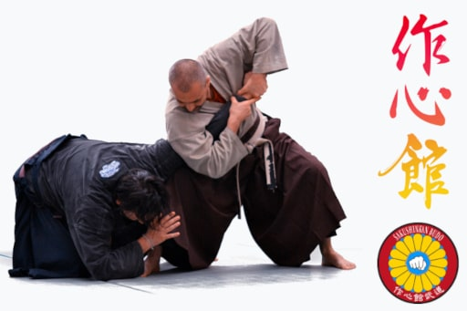

Sakushinkan Budō · Nio Shin Ryu
Nio Shin Ryu Kempo
Un percorso di addestramento marziale tradizionale che comprende tecniche a mani nude e studio delle armi, con attenzione alla formazione tecnica, fisica e interiore del praticante.
Martedì e giovedì · 20:00–22:00
Scopri il corso →